채널: 레디포그로스 (Ready For Growth) | 길이: 15:48 | 날짜: 2026-02-05
화자는 시작부터 소파에 비스듬히 누워 스마트폰을 쥔 채 넷플릭스/유튜브를 오가는 상태를 제시한다. 머릿속엔 설거지, 보고서, 운동 같은 할 일이 분명히 떠 있는데 몸이 움직이지 않는 간극이 핵심 문제로 제기된다.
시각적으로는 인물 위로 굵은 하강 화살표를 배치하고, 접시/노트북/덤벨 아이콘을 함께 놓아 “해야 할 일의 압박”을 외부 오브젝트로 구조화한다. 이어 ON 스위치와 상승 그래프 이미지를 넣어 “원인 규명 후 실행 스위치 재점화”가 영상의 목적임을 선언한다.
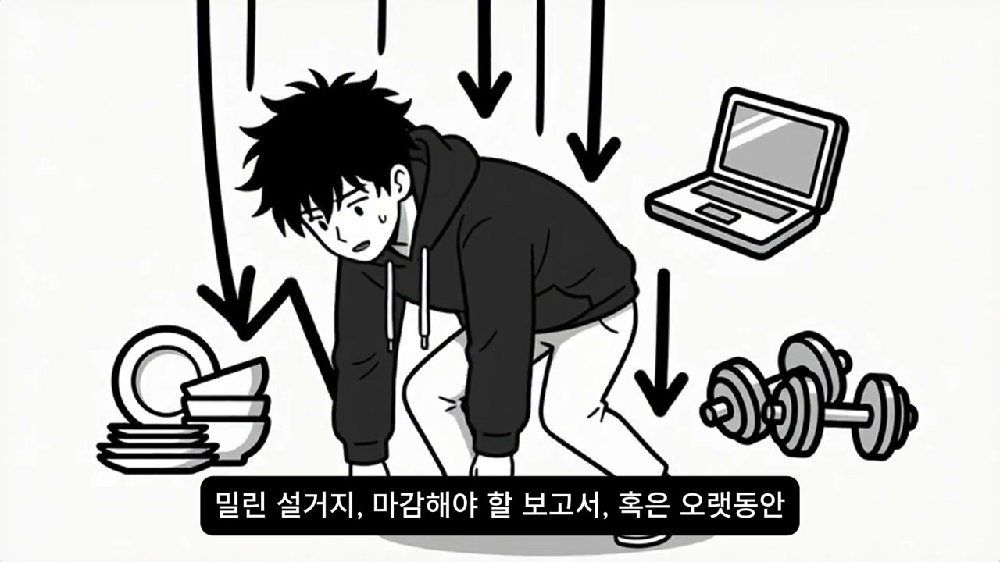
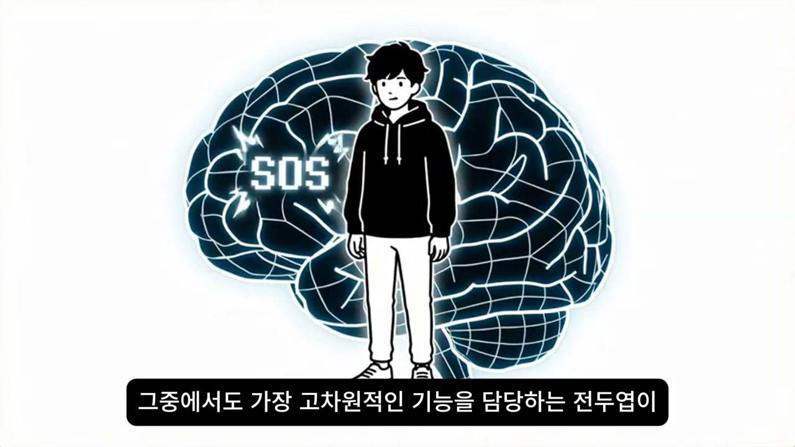
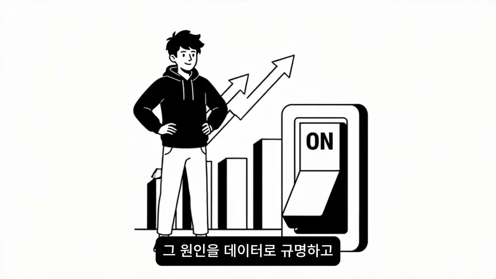
0:33~2:52 구간의 핵심은 “게으름 낙인”을 떼고 “신경학적 신호”로 프레임을 바꾸는 것이다. 화자는 특히 INTP/내향 직관형처럼 지속적으로 머릿속 시뮬레이션을 돌리는 사람에게 이 신호가 더 치명적이라고 말한다.
청소 예시를 통해 실행 이전에 과제가 연쇄적으로 비대해지는 사고 흐름을 보여준다. “청소기 돌리기 → 바닥 정리 필요 → 수납함 정리 필요 → 공사급 일 → 주말로 미루기”로 이어지며, 이는 게으름이 아니라 이미 뇌가 전체 공정의 에너지 소모를 계산해 ‘가성비 없음’ 결론을 낸 상태라는 설명이다.
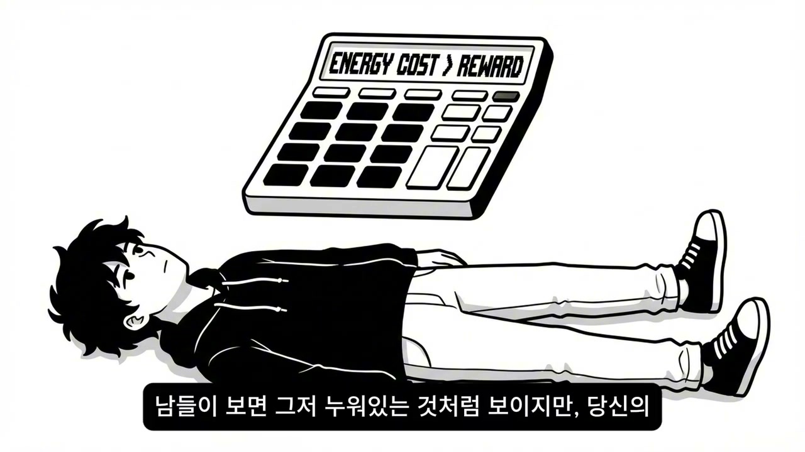
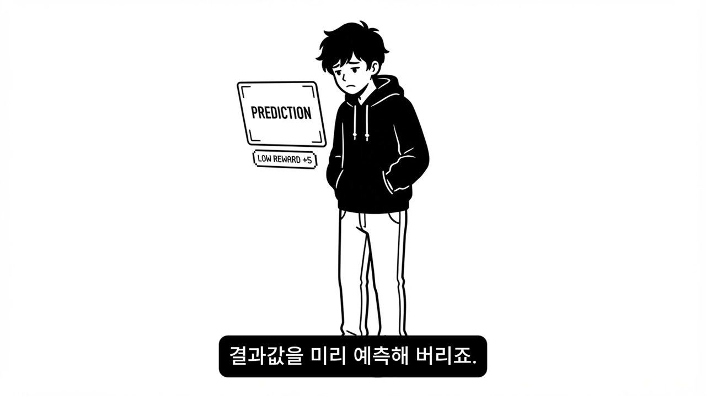
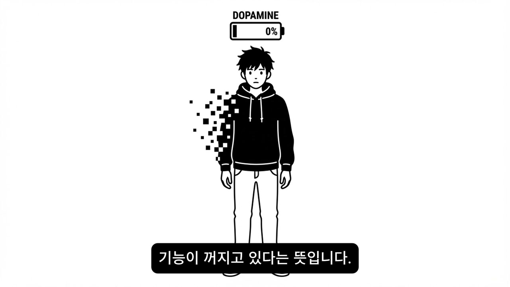
영상은 실행기능을 담당하는 전두엽을 “뇌 속 유능한 비서”로 의인화한다. 이 비서는 계획 수립, 충동 억제, 하기 싫은 일 착수를 담당하지만, 치명적 약점은 배터리 용량이 작다는 점이라고 설명한다.
정량 포인트로 “뇌는 체중의 약 2%지만, 신체 전체 에너지의 20% 이상을 소비”를 제시한다. 그중에서도 전전두피질이 에너지 소모가 큰데, IN 성향은 기본 세팅 자체가 고해상도 시뮬레이터라서 가만히 있어도 ‘If-Then’ 가지치기 계산이 계속 돌아 과로에 쉽게 도달한다는 구조다.
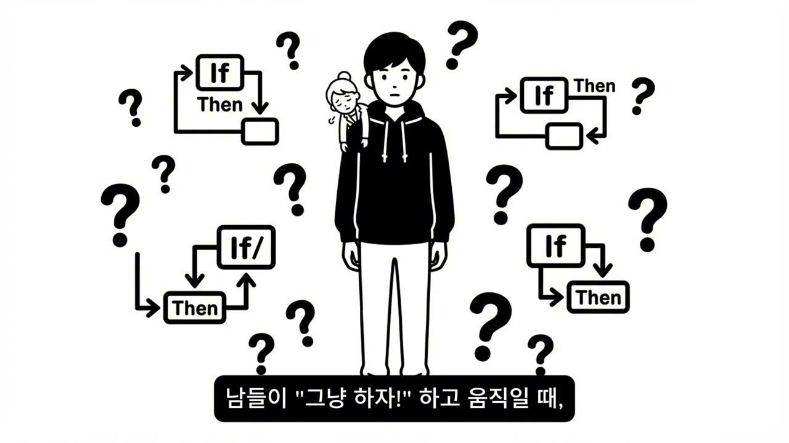
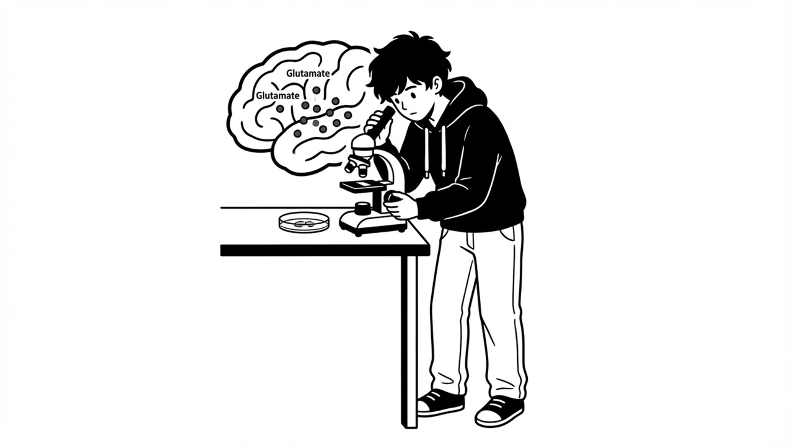
영상의 과학적 권위 근거로 2019년 프랑스 파리 뇌연구소의 마티아스 페실리온 박사팀을 호출한다. 핵심 설명은 복잡한 인지 과제를 오래 하면 뇌에 글루타메이트(영상 내 표현: 독성 물질)가 축적되고, 특히 전전두피질에 쌓일 경우 뇌가 추가 손상을 막기 위해 시스템을 강제로 셧다운한다는 것이다.
여기서 “귀찮아”는 의지 박약의 언어가 아니라 전두엽이 보내는 절전 모드 전환 요청으로 재정의된다. 시각적으로는 연구자/현미경/뇌 내부 ‘Glutamate’ 표기, 이어서 비서 캐릭터와 깨진 계산기(ERROR)로 “계산 시스템 이상”을 연결한다.
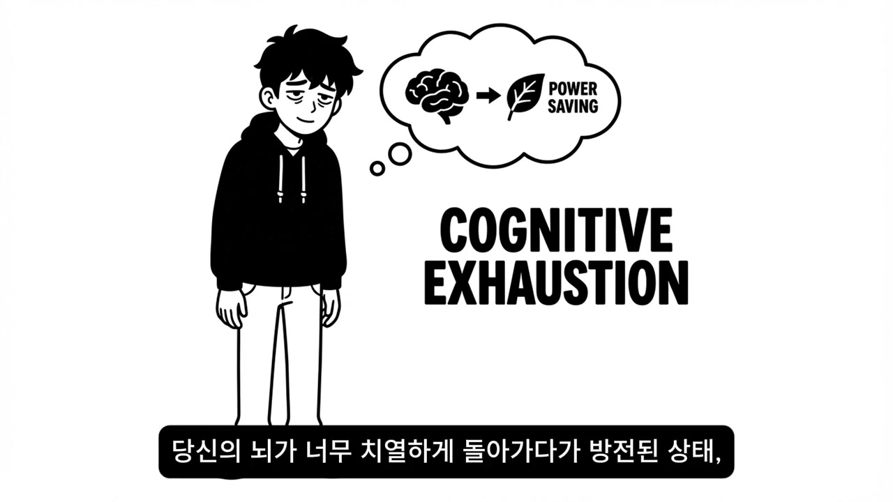
영상은 반복 방전의 더 큰 위험으로 예측 보상 오류를 제시한다. 정상 뇌는 “노력 → 보상” 기대 회로가 작동하지만, 분석형 뇌는 비관 편향으로 계산기가 고장나 행동 전 단계에서 비용을 과대 산정한다는 주장이다.
구체 예시는 설거지다. 실제론 10분이면 끝날 일을 뇌는 1시간 중노동급 고통으로 선청구하고, 반대로 완료 후 보상은 “이거 치운다고 인생이 달라지나?” 수준으로 낮게 추정한다. 즉 “비용은 높게, 보상은 낮게” 계산해 시작 자체를 막는다.
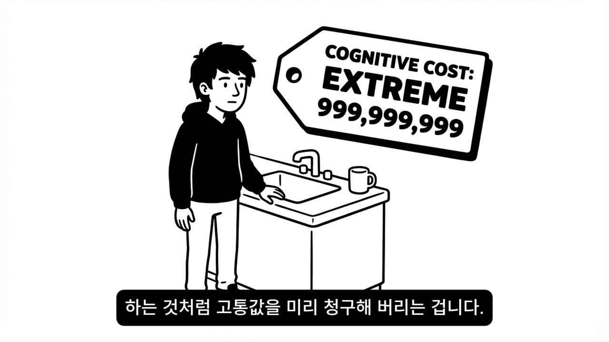
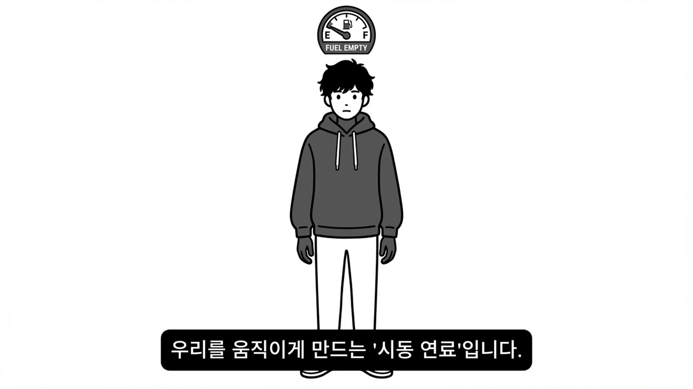
영상은 잘못된 수지타산 결과가 선조체의 도파민 공급 차단으로 이어진다고 말한다. 도파민은 단순 기분 호르몬이 아니라 행동 점화용 연료이며, 공급이 끊기면 몸이 납덩이처럼 무거워진다는 비유를 사용한다.
“입버릇처럼 귀찮아를 달고 사는 상태”를 이 메커니즘의 결과로 규정하며, 시청자 죄책감을 낮추는 메시지를 반복한다. 즉 “의지가 약한 게 아니라, 뇌가 너무 치열하게 돌아간 뒤 방전된 인지적 탈진 상태”라는 진단이다.
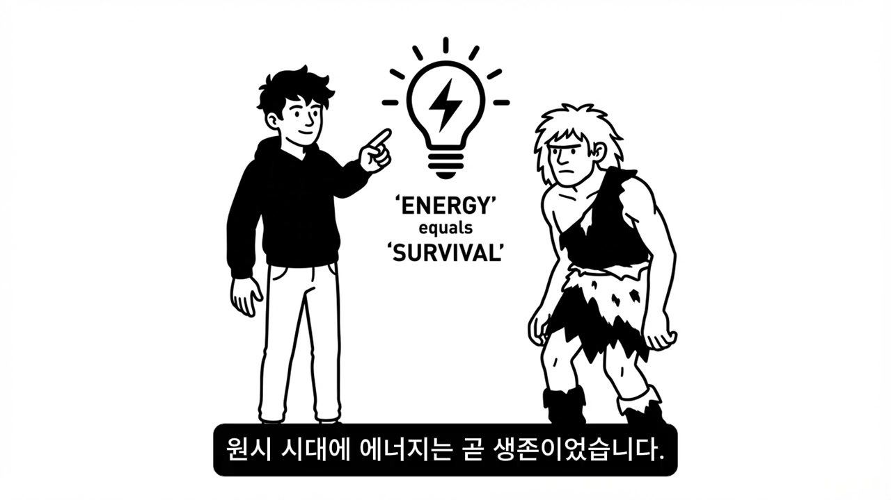
이 구간에서 화자는 “지독한 귀찮음은 타고난 전략가의 증거”라고 프레임을 바꾼다. 원시 환경에서 에너지 보존은 생존 그 자체였고, 불필요하게 에너지를 소모한 개체보다 필요할 때 폭발적으로 쓰는 개체가 살아남았다는 진화 서사를 연결한다.
INTP/내향형은 이 에너지 보존 전략의 후예로 설명되며, 따라서 “귀찮아”는 “지금 이 일은 아직 최적화되지 않았다”는 경고음으로 읽어야 한다고 주장한다. 그러나 기준치가 지나치게 높으면 “제대로 못 할 바엔 안 한다” 알고리즘이 작동해 혁신가와 몽상가의 분기로 갈린다는 경고도 동시에 제시한다.
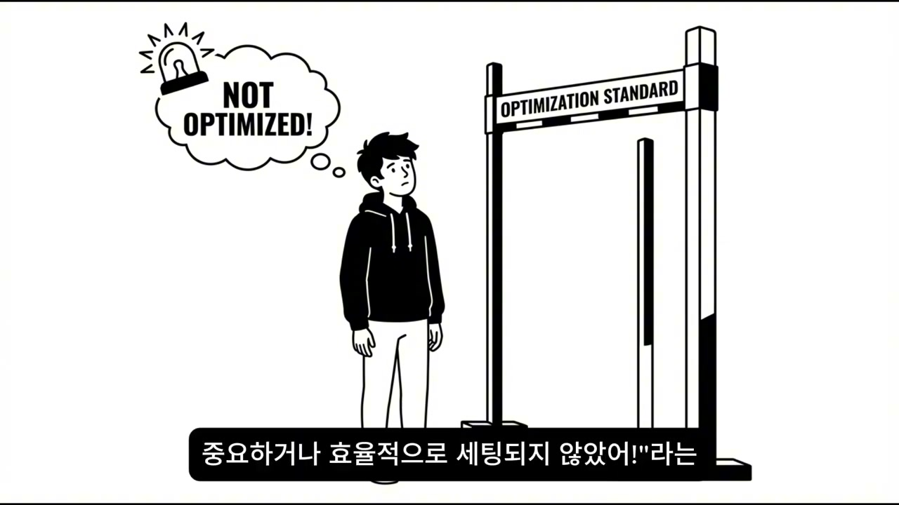
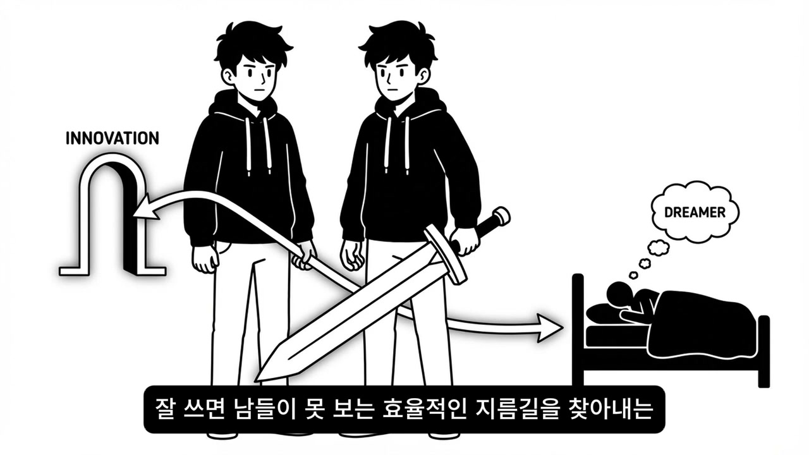
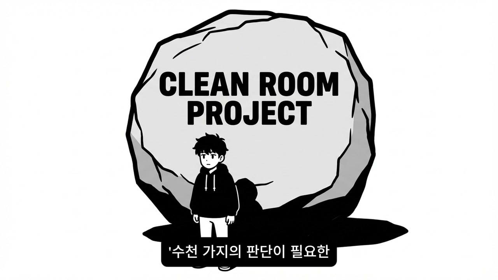
해결의 논리는 단순하다. 뇌가 느끼는 인지적 비용 단가를 강제로 낮추는 것, 즉 과제를 판단이 거의 필요 없는 최소 단위로 쪼개 전두엽을 속이는 것이다.
영상은 이를 zero-friction 전략이라 명명한다. 스포츠카 비유(시동 때 연료 소모 최대, 굴러가면 관성 작동)를 통해 핵심은 거대한 목표가 아니라 “첫 바퀴를 구르게 하는 사소한 트리거”임을 강조한다. 게임/좋아하는 유튜브에서는 귀찮음이 적은 이유도 즉각 보상과 낮은 진입 장벽 때문이라고 정리한다.
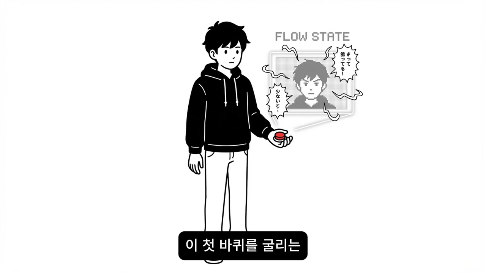
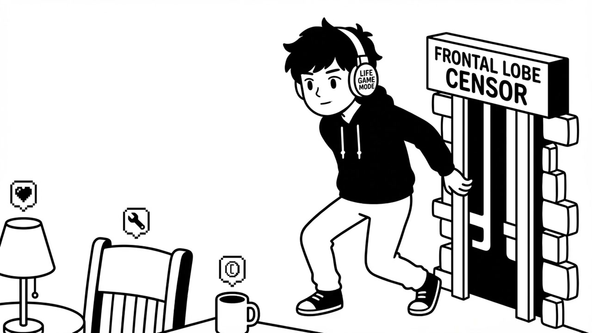
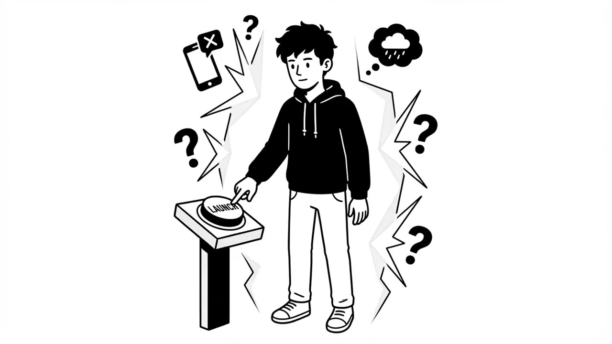
11:15 이후는 실전 프로토콜이다. 이름은 “5초 카운트다운 발사”, NASA 로켓 카운트다운 원리를 차용해 발사 외 변수를 차단하듯 뇌도 단일 목표에 고정시킨다는 설명이다.
핵심 전제는 “핑계 공장이 가동되기까지 평균 5초”이며, 그 안에 개입해야 한다는 것. 절차는 (1) 해야 할 일을 떠올림 (2) 속으로 5-4-3-2-1 역카운트 (3) 1이 끝나는 즉시 신체 일부를 무조건 움직임이다. 누워 있으면 스마트폰 든 손을 머리 위로 들고, 앉아 있으면 발바닥으로 바닥을 톡 치거나 몸을 한 번 굴리는 등 미세 움직임이면 충분하다고 안내한다.
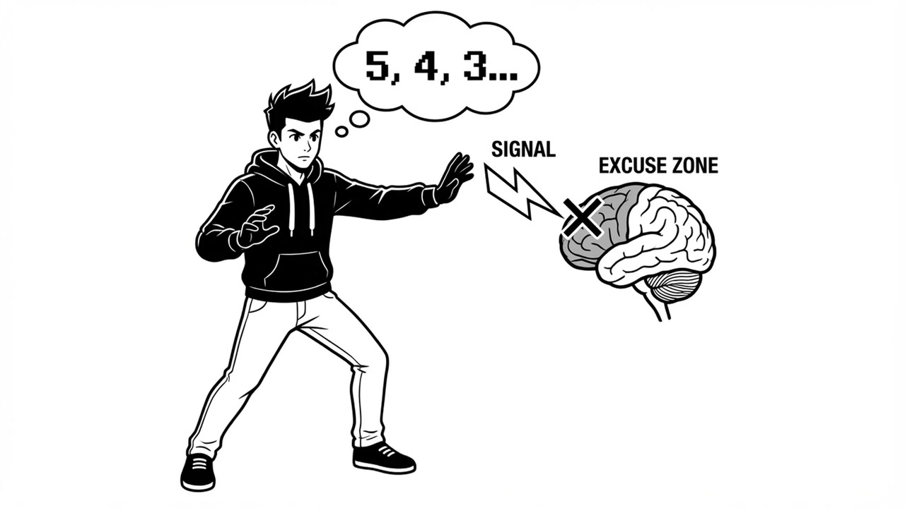
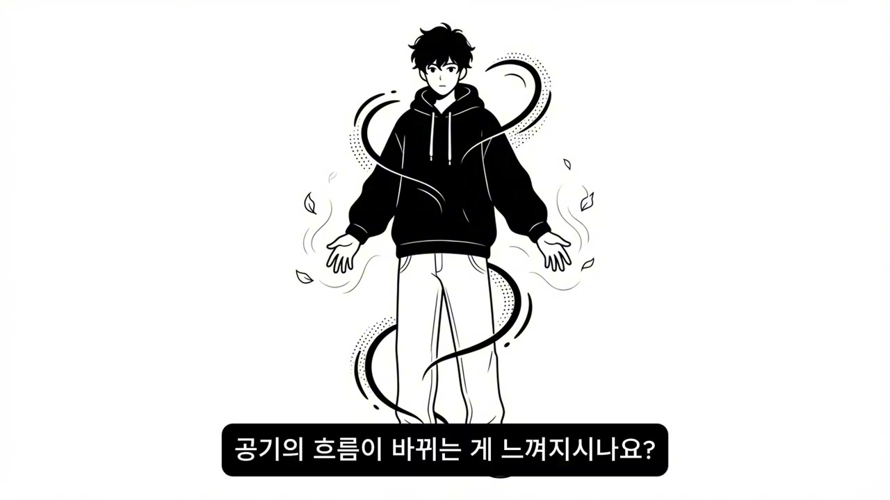
카운트다운 다음 보조 규칙으로 2분 법칙을 제시한다. “이 일을 하는 데 2분도 안 걸린다”라고 판단되면 생각 없이 즉시 처리하라는 규칙이며, 영상은 이것을 “뇌에 새 운영체제를 설치”하는 행위로 묘사한다.
제시된 생활 예시는 매우 구체적이다. 양말 빨래통에 넣기, 다 마신 컵 싱크대에 두기, 이메일 답장 하나 보내기처럼 판단 비용이 거의 없는 행동을 즉시 실행해 작은 완료감을 누적하라고 한다.
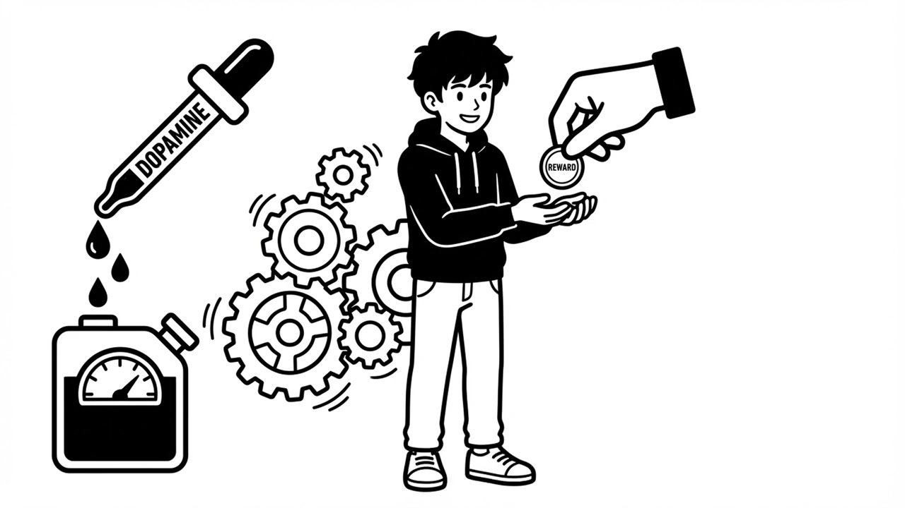
분석형 뇌를 설득하는 문구로 영상은 “이건 퀘스트가 아니라 로딩 화면의 미니게임”이라는 표현을 쓴다. 작은 행동 성공을 보상으로 인식시키면 도파민이 ‘찔끔’ 분비되고, 그 연료가 다음 행동으로 이어지는 관성이 만들어진다는 설명이다.
목표는 완벽한 하루가 아니라 “5초 안에 입을 걷어차는 단 한 번의 실행”으로 재정의된다. 이후 다시 슈퍼카 은유를 사용해, 지금 멈춰 있는 상태는 엔진 성능 부족이 아니라 시동 절차 미숙 문제라고 결론짓는다.
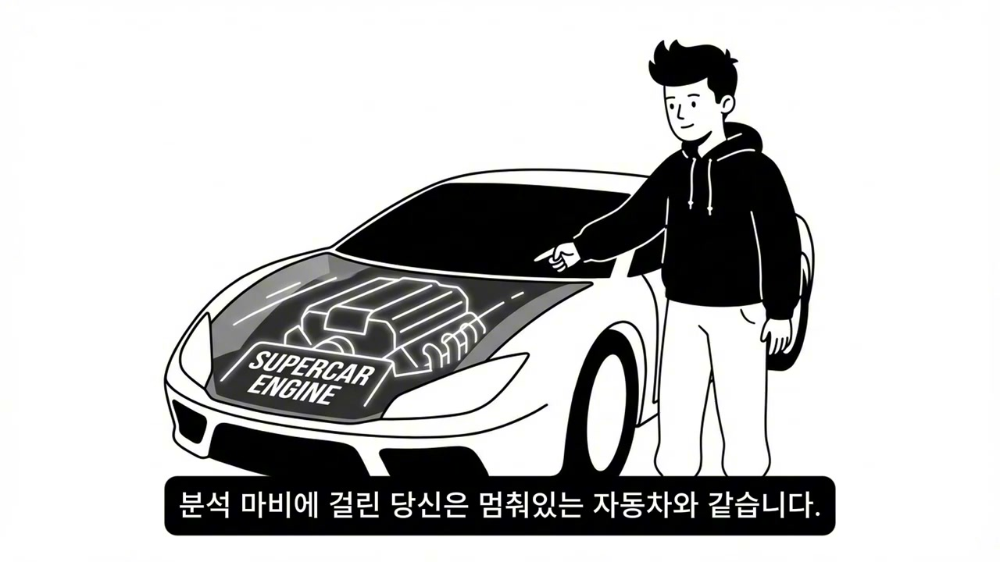
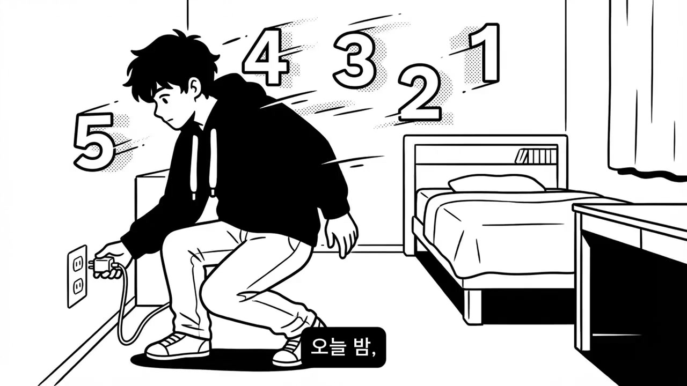
마지막 메시지는 “당신의 예민한 분석력은 자신을 갉는 칼이 아니라, 복잡한 세상을 명쾌하게 베어내는 요리사의 칼”이라는 정체성 전환이다. 즉 문제의 본질은 무능/게으름이 아니라 고성능 시스템의 시동 방식이라는 점을 반복해 각인한다.
엔딩은 Ready For Growth 브랜딩과 “연구원(멤버십) 참여” CTA로 이어지고, 다음 영상 주제를 “완벽주의 함정과 good enough 성공 전략”으로 예고한다. 마지막 클로징 멘트는 “당신의 성장을 큐레이션하는 레디 포 그로스”로 마감된다.
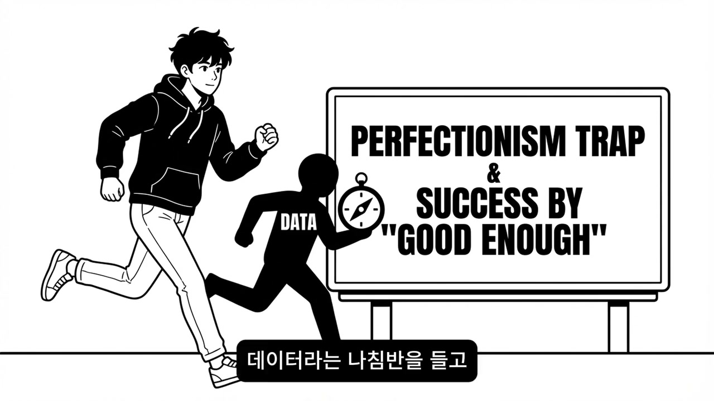
이 영상의 핵심 메시지는 명확하다. “귀찮음”은 도덕적 결함이 아니라 인지 시스템 과부하의 신호이며, 특히 고분석 성향일수록 실행 전에 비용을 과대평가하고 보상을 과소평가해 멈추기 쉽다는 것이다.
실용적 시사점은 거창한 계획보다 실행 점화 설계를 우선하라는 데 있다. 5초 카운트다운과 2분 규칙은 동기 고양 기법이 아니라, 전두엽 검열 루프보다 빠르게 신체 행동을 선행시켜 뇌의 판단 모드를 실행 모드로 전환하려는 프로토콜이다.
향후 전망 차원에서 이 영상은 “완벽주의-분석마비-행동지연” 시리즈 구조를 예고한다. 즉 다음 편의 “good enough 전략”은 이번 편의 점화 메커니즘을 확장해, 고기준 성향을 버리지 않고도 실행률을 높이는 방향으로 이어질 가능성이 높다.
댓글
GitHub 이슈 기반 댓글 시스템입니다.